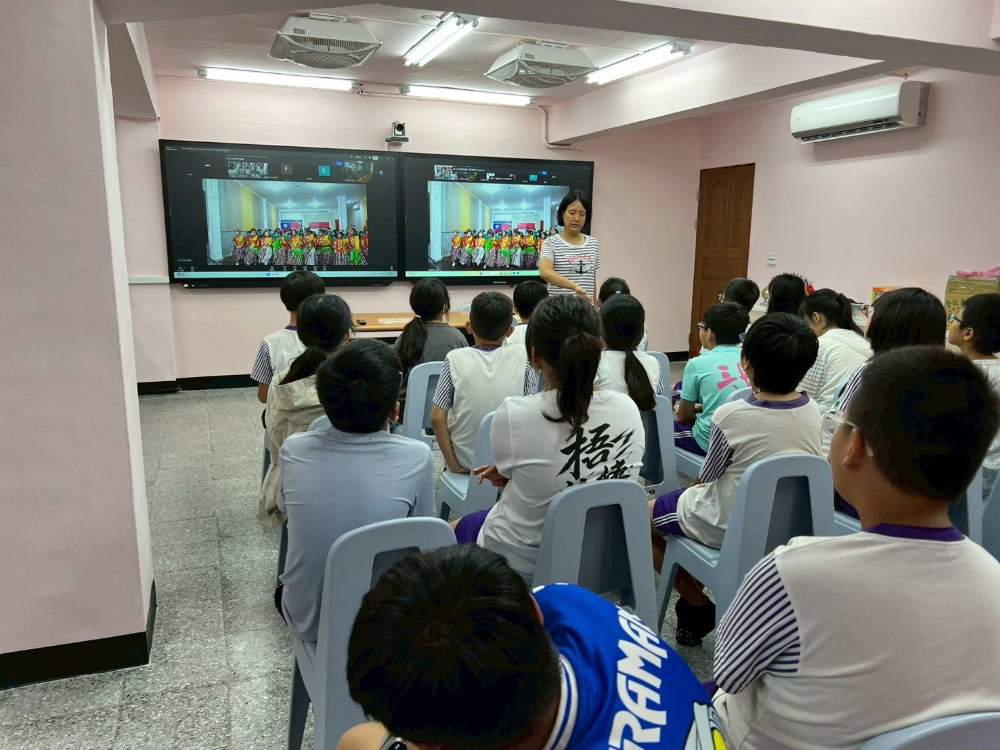
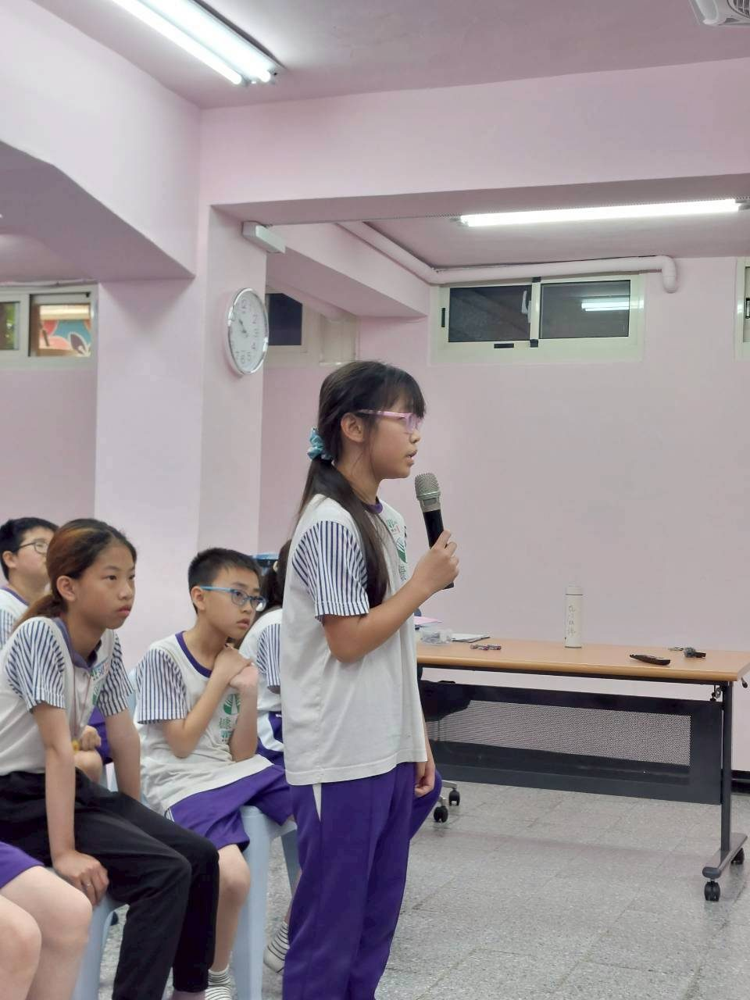
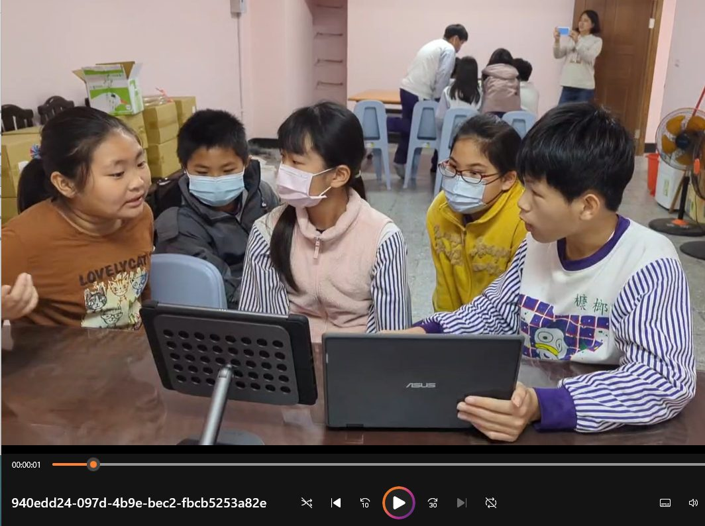
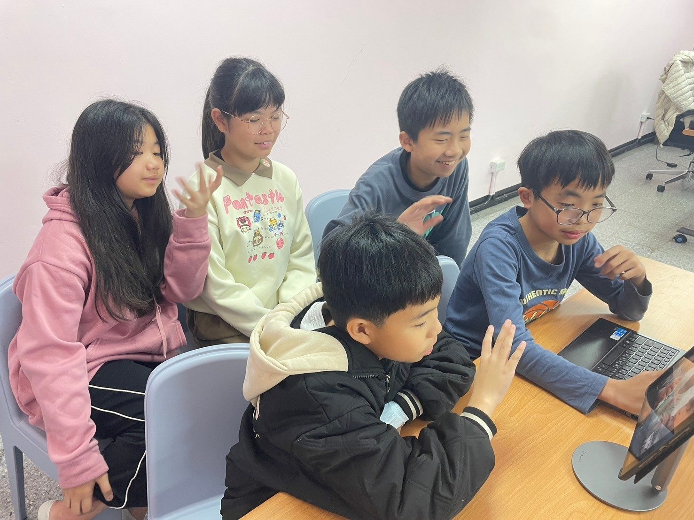
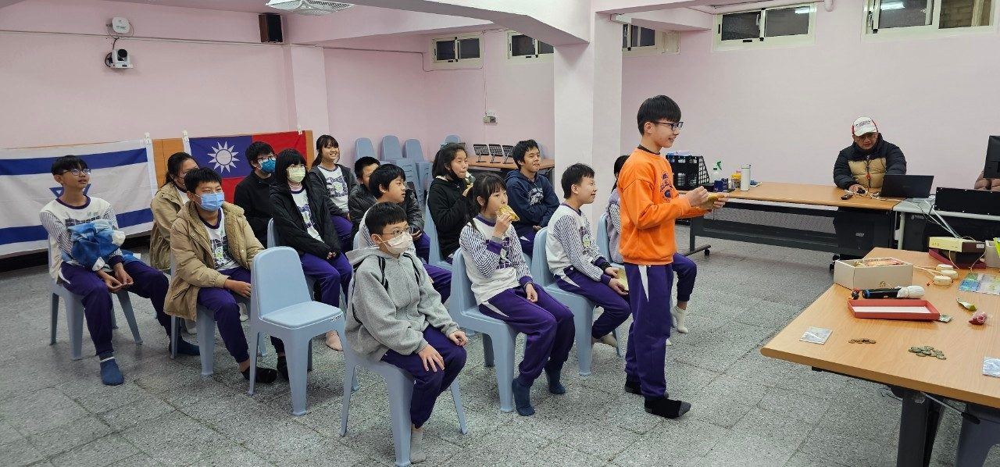
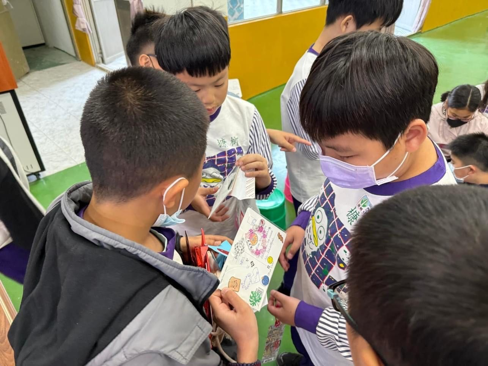
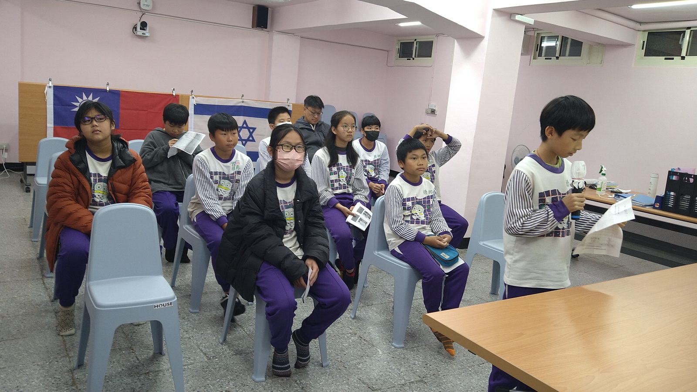
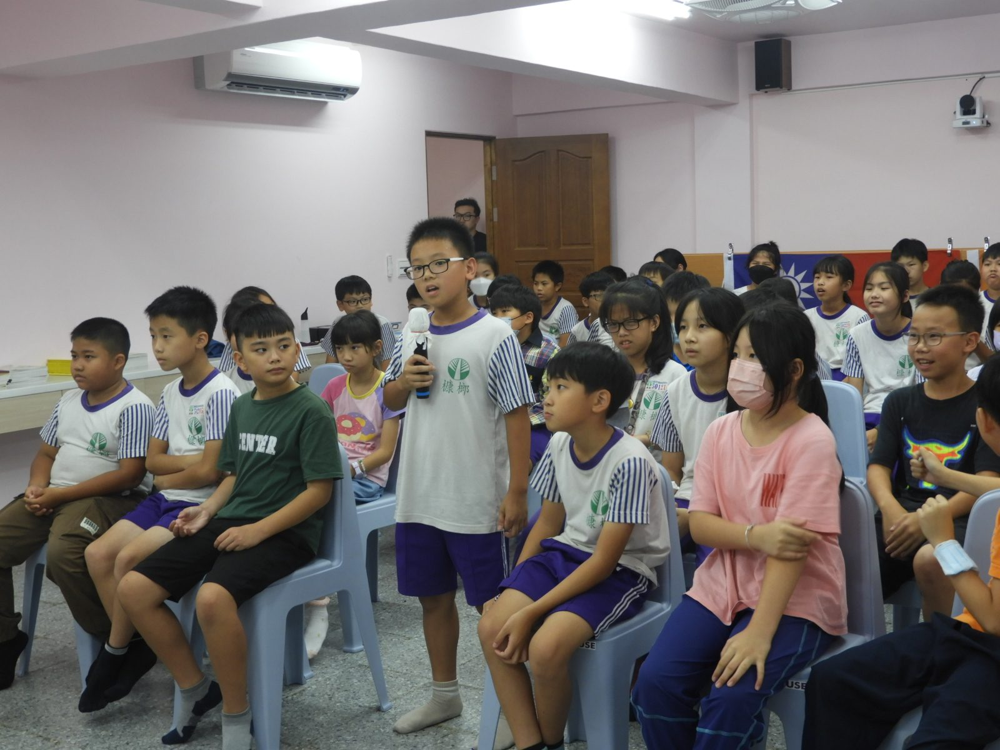

A Taiwanese Song Travels to Indonesia一首望春風，唱到印尼
For our second meeting with Indonesia, we did not bring more English sentences — we brought a song. Class 5B sang the Taiwanese Hokkien classic Bang Chhun Hong, and Class 5A played it on recorders.
第二次與印尼連線，我們帶去的不是更多英文句子，而是一首歌。五年乙班唱起閩南語經典〈望春風〉，五年甲班用直笛伴奏。
Read the report
A Tour of Russia, Guided by an Older Friend俄羅斯姐姐帶我們看世界
An eighth-grade student from Russia — only two years older than us — confidently introduced her country in English: its faith and festivals, its food and clothing, and a string of breathtaking landmarks.
一位只比我們大兩歲的俄羅斯八年級姐姐，自信地用英文介紹她的國家——信仰與節慶、食物與服飾，還有一座座令人驚嘆的地標。
Read the report
Talking About the Planet with Friends in India與印度學生聊聊我們的地球
Reduce, reuse, recycle. Our sixth graders met students from Him Academy in India to share how each country looks after the Earth, built around the United Nations Sustainable Development Goals.
減量、再利用、回收。六年級的孩子與印度 Him Academy 的學生連線，圍繞聯合國永續發展目標，分享兩國如何照顧我們的地球。
Read the report
Traveling Between Taiwan and Vietnam在台灣與越南之間旅行
Without boarding a single plane, our fifth graders “visited” both countries through a screen — sharing Taiwan's most beautiful places and discovering Vietnam's famous sights in return.
沒搭上任何一班飛機，五年級的孩子透過螢幕「走訪」了兩個國家——分享台灣最美的地方，也認識越南的著名景點。
Read the report
Our First International Exchange我們的第一次國際交流
Thirty seconds in front of the camera, in English, with new friends in Indonesia watching. Excited and a little nervous — and braver by the end.
面對鏡頭、用英文、三十秒——印尼的新朋友正看著。既期待又有點緊張，但到最後，變得更勇敢了。
Read the reportA Graduation Trip, Sung Across the World用一首歌，把畢業旅行寄到以色列
In the second year of our Sister School Program, our sixth graders filmed their graduation trip and set it to a song they had practiced for almost a whole year — then sent it all the way to Israel.
姐妹校計畫邁入第二年，六年級的孩子把畢業旅行拍成影片，配上練了將近一年的歌，寄到了遙遠的以色列。
Read the report
Saving Animals, a Shared Job for the World保護動物，是全世界的事
On the theme of endangered animals, Class 602 introduced Israel to Taiwan's rare wildlife — and learned, in return, about animals they had never heard of before.
以「瀕臨絕種的動物」為主題，六年乙班向以色列介紹台灣珍稀的野生動物，也認識了一群從沒聽過的動物。
Read the reportSports Day and a Country Walk, Filmed for India把運動會與鄉野踏查，拍給印度看
In year two of our Sister School Program, our fifth graders turned their sports day and a local field trip into films for India — carried along by a song they had practiced for almost a year.
姐妹校計畫第二年，五年級的孩子把運動會與鄉野踏查拍成影片寄給印度，背景音樂是練了將近一年的一首歌。
Read the report
Street Food, Games, and a Festival of Color街頭小吃、遊戲，與繽紛的節慶
In their second exchange with India, Class 5B feasted their eyes on Indian street food, learned brand-new games, and met the color and light of Holi — then danced their hearts out in return.
與印度的第二次交流，五年乙班看遍印度街頭小吃、學了全新的遊戲、認識了光與色彩的荷麗節——也回敬了一場賣力的熱舞。
Read the report
Five Groups, Two Cultures五個小組，兩種文化
Split into five groups, Class 5A introduced Taiwan piece by piece — and watched, spellbound, as an Indian girl in traditional dress performed a graceful dance.
分成五組，五年甲班一塊一塊地介紹台灣——也看得入迷：一位身著傳統服飾的印度小女孩，跳起了優雅的舞。
Read the report
A Reply Arrives From Spain來自西班牙的回信
The postcards we sent last semester finally came home with a reply — neat English, hand-drawn pictures, woven bracelets, and even Spanish candy. The English was hard, but we cracked it together.
上學期寄出的明信片，終於收到回音——工整的英文、手繪的圖畫、編織的手環，還有西班牙糖果。英文很難，但我們一起破解了。
Read the report
A Box Arrives From Israel以色列寄來的文化箱
Salty olives, peanutty Bamba, a game of Snakes and Ladders, and a set of special cups for the Sabbath — a box from Israel that taught us about a faraway way of life.
鹹鹹的橄欖、花生味的 Bamba、一副蛇梯棋，還有一組安息日專用的杯子——一只以色列寄來的箱子，教我們認識遙遠的生活方式。
Read the report
School Days, Shared with Japan和日本分享校園的日常
Class 5B introduced Japan to Taiwan's Indigenous cultures and rare animals — and heard, in return, all about sports festivals and singing contests at a school in Saitama.
五年乙班向日本介紹台灣的原住民文化與特有動物，也聽見了埼玉一所小學裡的運動會與歌唱比賽。
Read the report
Five Groups Meet Japan五個小組，認識日本
Class 501 split into five groups to introduce Taiwan's landmarks, wildlife, history, food, and money — then gathered for a happy Taiwan–Japan group photo.
五年甲班分成五組，介紹台灣的景點、動植物、歷史人物、美食與貨幣，最後拍下一張開心的台日大合照。
Read the report
Swapping the Treasures of Two Countries交換兩國的寶物
Class 602 introduced Israel to Taiwanese snacks, folk toys, cultural objects, and our coins and bills — and agreed to mail each other a box of treasures across the world.
六年乙班向以色列介紹台灣的傳統點心、童玩、文物與新台幣，並約定互寄一箱寶物到地球的另一端。
Read the report
Unboxing a Gift From Türkiye開箱！土耳其的文化禮物
After the end-of-term ceremony came the moment our fifth graders had waited for — opening a culture box from Türkiye, full of handwritten cards, bookmarks, a woven backpack, and the famous blue evil-eye charm.
結業式之後，五年級孩子引頸期盼的時刻到了——打開來自土耳其的文化箱，裡頭有手寫卡片、書籤、編織背包，還有著名的藍眼睛護身符。
Read the report
Postcards on Their Way to Türkiye寄往土耳其的明信片
Our fifth graders handwrote postcards for a gifted-and-talented school in İstanbul, and tucked in Taiwanese snacks and KangLang souvenirs — opening a window onto the wider world.
五年級的孩子親手寫下明信片，寄給伊斯坦堡一所資優學校，還附上台灣零食與槺榔的文創紀念品——為自己推開一扇通往世界的窗。
Read the report
Postcards and Warm Wishes for Spain寄給西班牙的明信片與祝福
Our sixth graders made self-introduction videos and postcards bursting with Taiwanese flavor for a school in Spain — and added their heartfelt wishes after hearing of the floods in Valencia.
六年級的孩子為西班牙的學校準備了自我介紹影片與充滿台灣味的明信片，也在得知瓦倫西亞水災後，捎上最誠摯的祝福。
Read the report
A Christmas Song for Israel吹給以色列的聖誕歌
Class 602 learned about Israel's food, language, and famous people — and answered with a Christmas carol on the recorder, sending joy and peace to the other side of the world.
六年乙班認識了以色列的食物、語言與名人，也用中音笛吹奏聖誕歌曲回應，把喜悅與和平送到地球的另一端。
Read the report
Little Teachers of Two Languages互當小老師，教彼此的語言
Meeting students from Israel for the first time, Class 601 took turns being little teachers — we taught everyday Chinese, they taught everyday Hebrew, and we introduced our small but charming school.
第一次見到以色列的學生，六年甲班輪流當起小老師——我們教日常中文，他們教日常希伯來文，還介紹了我們小而美的學校。
Read the report
Our Very First Meeting with India與印度的第一次相見
After months of preparation, our long-awaited first exchange with India arrived. Two schools of children greeted each other warmly, and every English sentence we had practiced finally found its moment.
籌備已久，我們與印度的第一次交流終於登場。兩校的孩子熱情相見，那些練了又練的英文句子，總算派上了用場。
Read the report